Куриные бёдрышки, запечённые с картофелем в сливках

Ингредиенты:
Куриные бедрышки - 2 шт.
Картошка - 3 шт.
Сыр
Лук
Сливки 20% - 100 мл.
Растительное масло
Соль
Заметки:
Видео рецепт:
Пошаговый рецепт:
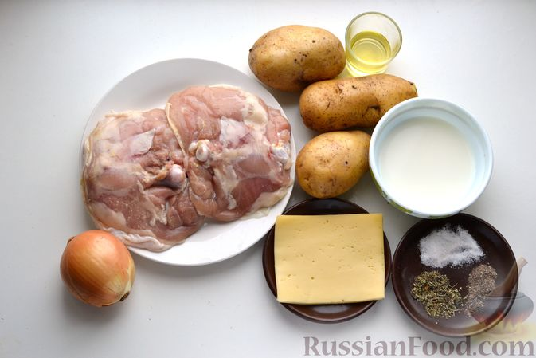
Шаг 1. Подготавливаем все необходимые продукты.
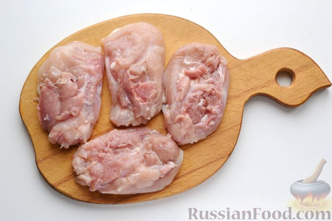
Шаг 2. Куриные бёдрышки промываем и обсушиваем бумажными полотенцами. При желании снимаем кожу. Извлекаем косточки и разрезаем каждое бедро на 2 части.
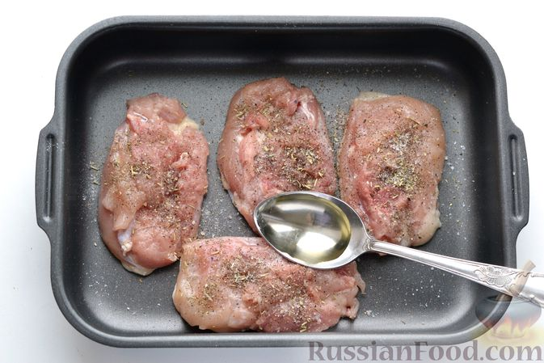
Шаг 3. Кусочки курицы выкладываем в форму для запекания. У меня форма размером 20х15 см. Добавляем соль, перец, итальянские травы и растительное масло. Тщательно втираем специи, травы и масло в каждое бёдрышко. Включаем духовку разогреваться до 180 градусов.
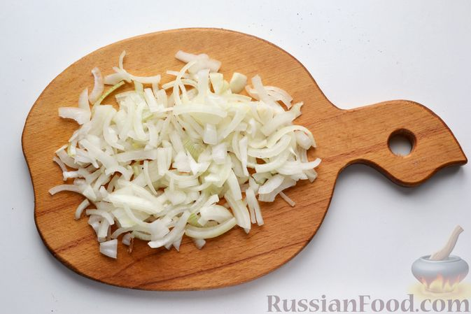
Шаг 4. Лук очищаем и нарезаем четвертькольцами.
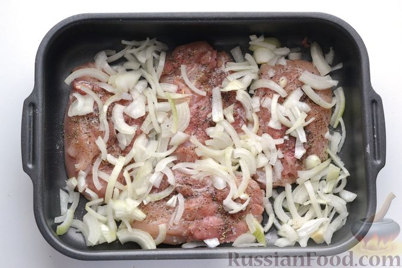
Шаг 5. Выкладываем лук к подготовленной курице, перемешиваем ингредиенты.
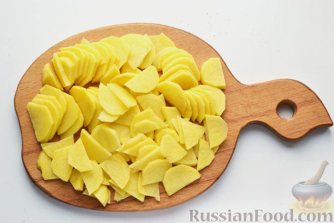
Шаг 6. Картофель очищаем, промываем и нарезаем тонкими полукружиями.
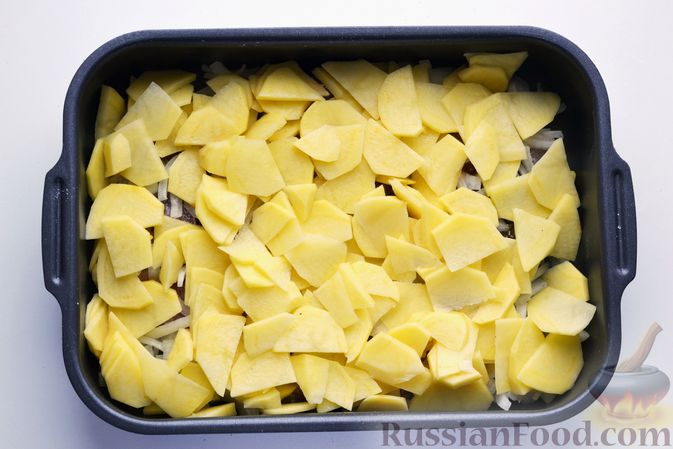
Шаг 7. Выкладываем картофель к мясу птицы в форму.
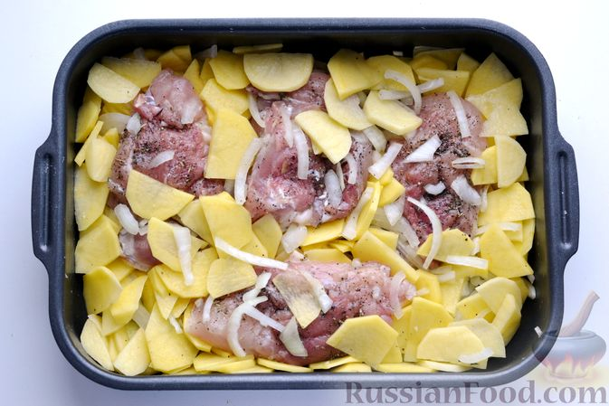
Шаг 8. Аккуратно перемешиваем, чтобы большая часть картофеля с луком оказалась внизу, под кусочками курицы (как на фото).
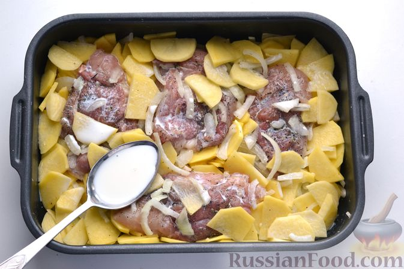
Шаг 9. Заливаем куриные бёдрышки с картошкой и луком сливками.
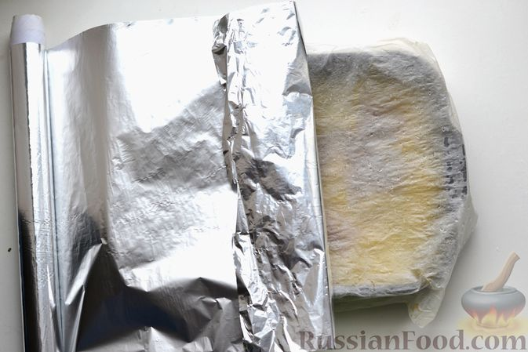
Шаг 10. Смачиваем бумагу для запекания в воде и накрываем форму влажным пергаментом. Сверху пергамент накрываем листом фольги и со всех сторон закрепляем по краям формы, чтобы во время приготовления не выходил пар.
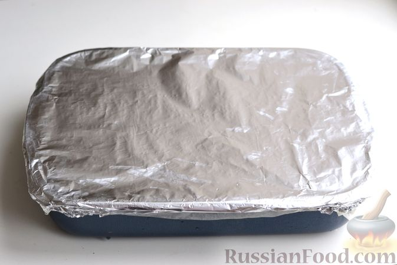
Шаг 11. Отправляем форму в разогретую до 180 градусов духовку, запекаем блюдо 50-60 мин, почти до готовности (ориентируйтесь на особенности своей духовки).
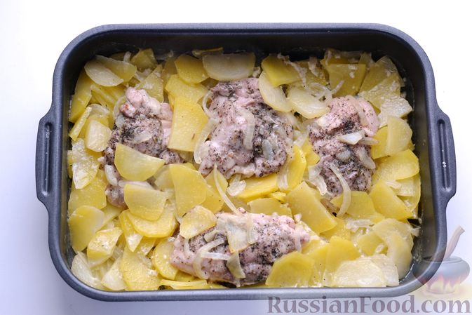
Шаг 12. По истечении времени достаём форму из духовки, освобождаем от фольги с пергаментом.
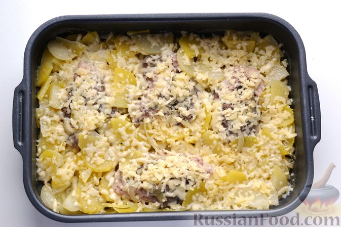
Шаг 13. Натираем сыр на крупной тёрке и посыпаем сверху курицу с картошкой. Отправляем обратно в духовку (но уже без фольги с пергаментом) на 10-15 минут. Когда сыр полностью расплавится, достаём блюдо из духовки.
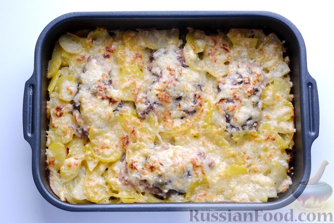
Шаг 14. Куриные бёдрышки, запечённые с картофелем в сливках, готовы.
Шаг 15. Подавать такое блюдо можно с овощным салатом, свежими овощами или разносолами.